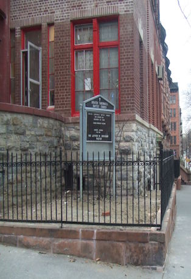

HOME PAGE
Welcome to the Greater Tabernacle Baptist Church.

We are a small church with a big heart.
Everyone is welcome to worship and fellowship with us.
We thank God for smoothing out the rough road, lowering the high
mountains, raising the low valley, and making our dark path bright.
Today we lift our voices and our hearts in praise, honor, love, and
gratitude to a faithful God.
It is our prayer that we will conduct ourselves in a manner worthy of the gospel
of Christ, so that we may stand firm in one spirit, with one mind striving
together for the faith of the gospel (Philippians 1:27) as we, the Pastor
and members of Greater Tabernacle Baptist Church, continue to glorify God
in our worship, our work and our witness.